5.1.3 BLE Multirole Multilink Transparent UART
This section explains how to create a multirole multilink device and send/receive characters between connected BLE devices over Microchip proprietary Transparent UART Profile. The multilink central enables users to connect multiple peripheral devices to a central device. The multilink central device acts as peripheral device and is connected to an another central device(MBD application). The central is MBD application and peripheral devices in this tutorial are PIC32-BZ6 Curiosity Boards.
Users can choose to either run the precompiled Application Example hex file provided on the PIC32-BZ6 Curiosity Board or follow the steps to develop the application from scratch.
It is recommended to follow the examples in sequence to understand the basic concepts before progressing to the advanced topics.
Recommended Readings
-
Getting Started with Application Building Blocks – See Building Block Examples from Related Links.
-
Getting Started with Peripheral Building Blocks – See Peripheral Devices from Related Links.
- See BLE Deep Sleep Advertising from Related Links.
- See BLE Transparent UART from Related Links.
- See BLE Connection from Related Links.
-
BLE Software Specification – See MPLAB® Harmony Wireless BLE in Reference Documentation from Related Links.
Hardware Requirement
| S. No. | Tool | Quantity |
|---|---|---|
| 1 | PIC32-BZ6 Curiosity Board | 4 (min) |
| 2 | USB-C cable | 4 |
SDK Setup
Refer to Getting Started with Software Development from Related Links.
Software Requirement
To install Tera Term tool, refer to the Tera Term web page in Reference Documentation from Related Links.
Smartphone App
MBD
Programming the Precompiled Hex file or Application Example
Using MPLAB® X IPE:
- Import and program the precompiled hex
file:
<Harmony Content Path>\wireless_apps_pic32_bz6\apps\ble\building_blocks\multirole\multilink\precompiled_hex. - For detailed steps, refer to
Programming a Device in MPLAB® IPE in Reference
Documentation from Related Links.Note: Ensure to choose the correct Device and Tool information.
Using MPLAB® X IDE:
- Perform the following the steps mentioned in Running a Precompiled Example. For more information, refer to Running a Precompiled Application Example from Related Links.
- Open and program the application
mr_ml_trp_uart.xlocated in<Harmony Content Path>\wireless_apps_pic32_bz6\apps\ble\building_blocks\multirole\multilink\firmware. - For more details on how to find the Harmony Content Path, refer to Installing the MCC Plugin from Related Links.
Demo Description
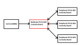
Demo will print start of the scanning “Scanning”,connected “Connected!” and disconnected “Disconnected” state on a terminal emulator like TeraTerm@ (Speed: 115200, Data: 8-bit, Parity: none, stop bits: 1 bit, Flow control: none) Application Data to be sent to the connected peripheral device should be entered in the terminal emulator.
Upon a disconnect event, the device will start scanning again if a peripheral was disconnected. If the central was disconnected, then the device will start advertising again.
Testing
- Device 1 will have PUBLIC address of {0xA1, 0xA2, 0xA3, 0xA4, 0xA5, 0xA6}
- Device 2 will have PUBLIC address of {0xB1, 0xB2, 0xB3, 0xB4, 0xB5, 0xB6}
- Device 3 will have PUBLIC address of {0xC1, 0xC2, 0xC3, 0xC4, 0xC5, 0xC6}
Precompiled Hex files for peripheral devices with different addresses as mentioned above are available here.
Demo Experience when using four PIC32-BZ6 Curiosity boards, three
configured as Peripheral and one configured as MultiRole device This section assumes that a
user has already programmed the peripheral_trp_uart application on 3 PIC32-BZ6 Curiosity Boards.
- Board1 = PIC32-BZ6 Curiosity Board with
mr_ml_trp_uartapplicaton Programmed - Board2(Device1) = PIC32-BZ6 Curiosity Board with
peripheral_trp_uartapplication Programmed - Board3(Device2) = PIC32-BZ6 Curiosity Board with
peripheral_trp_uartapplication Programmed - Board4(Device3) = PIC32-BZ6 Curiosity Board with
peripheral_trp_uartapplication Programmed - Phone1 = Smartphone with MBD app installed
- Board1:
- Open TeraTerm @ (Speed: 115200, Data: 8-bit, Parity: none, stop bits: 1 bit, Flow control: none).
- Reset the board. Upon reset, “Scanning” message is displayed on the TeraTerm.
- Upon finding peripheral device with public address {0xA1, 0xA2, 0xA3, 0xA4, 0xA5, 0xA6} message “Found Peer Node” will be displayed and a connection request will be initiated “Initiating connection”.
- During the scan time if more devices are available which will be true in this case, multirole multilink device will keep initiating connections with the new peer nodes.
- After the scan period, a “Scan Completed” message will be displayed and the device will begin advertising as a peripheral. Once advertisement starts, an “Advertising” message will display.
- Board2/Board3/Board4:
- Open TeraTerm @ (Speed: 115200, Data: 8-bit, Parity: none, stop bits: 1 bit, Flow control: none).
- Reset the board. Upon reset,
“Advertising” message is displayed on the TeraTerm.Note: Scanner is configured to scan only for 100 seconds. Ensure the peer device is advertising.
-
Phone1 MBD setup:
- Select BLE UART
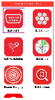
- Select PIC32CXBZ
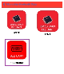
-
Select Start
-
Wait for the
mr_ml_trp_uartdevice to complete its scanning and to start advertising, then select “pic32cx-bz6” to connect - Select “Text mode”
- Within the settings, ensure that “Display data” is turned ON
- Select BLE UART
- Characters entered on multirole multilink device (Board1) terminal emulator will appear on peripheral devices (Board2,3,4) emulator in a round-robin fashion without priority. For example, typing “abc” in the multirole multilink device terminal emulator will print “a” on one peripheral terminal emulator, “b” on another peripheral terminal emulator, and “c” on the last peripheral terminal emulator as shown below
- Characters entered on any peripheral devices (Board2,3,4) terminal emulator will appear on central device's (Board1) terminal emulator with the prefix “Client Data :” as shown below.
- Characters entered on any central device (Phone1 with MBD app) using Rx char (49535343-8841-43f4-a8d4-ecbe34729bb3) will appear on multirole device's (Board1) terminal emulator and will be forwarded to the peripheral devices (Board2,3,4). Consequently, the message will be printed on the peripheral device’s terminal emulators. This data will have the prefix of “Server Data :” on the multirole multilink (Board1) terminal emulator To send data on MBD, select the “Input String” field, type a message, and press send If successful, the MBD screen will look like the image below and the TeraTerm windows will look like the image below.
Developing this Application from scratch using MPLAB Code Configurator
- Create a new harmony project. For more details, see Creating a New MCC Harmony Project from Related Links.
- Import component configuration: This
step helps users setup the basic components and configuration required to develop this
application.Note: Import and Export functionality of component configuration will help users to start from a known working setup of configuration.
- Accept dependencies or satisfiers when prompted.
- Verify if the Project Graph window has
all the expected configuration.
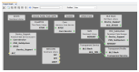
Verify Scan, Advertisement and Transparent Profile Configuration
- Select BLE_Stack component in project
graph.
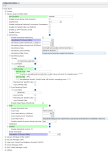
Note: Advertising Interval Min and Max can be modified. Advertisement payload can be configured by user here. - Select Transparent Profile configuration.
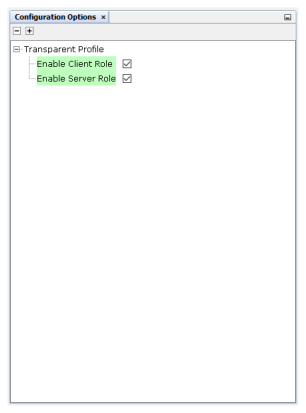
Generating a Code
For more details on code generation, refer to MPLAB Code Configurator (MCC) Code Generation from Related Links.
Files and Routines Automatically Generated by the MCC
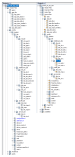
initialization.cThe BLE stack initialization routine executed during application initialization can be found in project files. This initialization routine is automatically generated by the MCC. This call initializes and configures the GAP, GATT, SMP, L2CAP and BLE middleware layers.
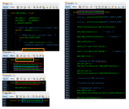
| Source Files | Usage |
|---|---|
app.c | Application State machine, includes calls for Initialization of all BLE stack (GAP,GATT, SMP, L2CAP) related component configurations |
app_ble.c | Source code for the BLE stack related component configurations, code related to
function calls from app.c |
app_ble_handler.c | All GAP, GATT, SMP and L2CAP event handlers |
app_trspc_handler.c | All transparent UART client related event handlers |
app_trsps_handler.c | All transparent UART server related event handlers |
ble_trspc.c | All transparent client functions for user application |
ble_trsps.c | All transparent server functions for user application |
app.c is autogenerated and has a state machine
based application code. Users can use this template to develop their own application.Header Files
ble_gap.h: This header file contains BLE GAP functions and is automatically included in theapp.cfileble_trspc.h: This is the header file associated with API’s and structures related to BLE Transparent Client functions for Application Userble_trsps.h: This is the header file associated with API’s and structures related to BLE Transparent Server functions for Application User
Function Calls
APP_BleStackInit() functionAPP_BleStackInit()is the API that will be called inside the Applications Initial State --APP_STATE_INITinapp.c
User Application Development
- Include the user action. For more information, refer to User Action from Related Links.
-
ble_trspc.hin app.c, BLE Transparent UART client related API's are available here -
ble_trsps.hin app.c, BLE Transparent UART Server related API's are available here -
osal/osal_freertos_extend.hinapp_trsps_handler.c, OSAL related API's are available here -
definitions.h in all the files where UART will be used to print debug informationNote:
definitions.his not specific to just UART peripheral, instead it should be included in all application source files where peripheral functionality will be exercised
// Scanning Enabled
BLE_GAP_SetScanningEnable(true, BLE_GAP_SCAN_FD_ENABLE, BLE_GAP_SCAN_MODE_OBSERVER, 1000);
// Output the status string to UART
SERCOM0_USART_Write((uint8_t *)"Scanning \r\n", 11);This API is called in the Applications initial state - APP_STATE_INIT in
app.c. Scan duration is 100 seconds
-
BLE_GAP_EVT_ADV_REPORTevent is generated inapp_ble_handler.cupon finding Advertisements on legacy channels -
BLE connection can be initiated by using the API
BLE_GAP_CreateConnection(&createConnParam_t);// code snippet to filter scan results and initiate connection // Filter Devices based of Address, for this example address checking only 2 bytes if ((p_event->eventField.evtAdvReport.addr.addr[0] == 0xA1 && p_event->eventField.evtAdvReport.addr.addr[1] == 0xA2) || (p_event->eventField.evtAdvReport.addr.addr[0] == 0xB1 && p_event->eventField.evtAdvReport.addr.addr[1] == 0xB2) || (p_event->eventField.evtAdvReport.addr.addr[0] == 0xC1 && p_event->eventField.evtAdvReport.addr.addr[1] == 0xC2)) { SERCOM0_USART_Write((uint8_t *)"Found Peer Node\r\n", 17); BLE_GAP_CreateConnParams_T createConnParam_t; createConnParam_t.scanInterval = 0x3C; // 37.5 ms createConnParam_t.scanWindow = 0x1E; // 18.75 ms createConnParam_t.filterPolicy = BLE_GAP_SCAN_FP_ACCEPT_ALL; createConnParam_t.peerAddr.addrType = p_event->eventField.evtAdvReport.addr.addrType; memcpy(createConnParam_t.peerAddr.addr, p_event->eventField.evtAdvReport.addr.addr, GAP_MAX_BD_ADDRESS_LEN); createConnParam_t.connParams.intervalMin = 0x30; createConnParam_t.connParams.intervalMax = 0x30; createConnParam_t.connParams.latency = 0; createConnParam_t.connParams.supervisionTimeout = 0x48; SERCOM0_USART_Write((uint8_t *)"Initiating Connection\r\n", 23); BLE_GAP_CreateConnection(&createConnParam_t); }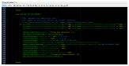
- In
app_ble_handler.cBLE_GAP_EVT_CONNECTEDevent will be generated when a BLE connection is completed.BLE_GAP_EVT_DISCONNECTEDevent will be generated when a BLE connection is broken.
-
Connection handle associated with the peer peripheral device needs to be saved for data exchange after a BLE connection
-
p_event->eventField.evtConnect.connHandle has this information
- In Multilink Application, unique connection handler's will be generated for all the peripheral links
-
The disconnect handle associated with the peer peripheral device needs to be removed from the
conn_hdllist. Additionally, if the device that got disconnected was a peripheral, then the multirole device will start scanning again. If the multirole device that got disconnected was a central, then the device will start advertising again. -
p_event->eventField.evtDisconnect.connHandle has this information
-
// Definitions and global variables #define BLE_ROLE_CLIENT 1 #define BLE_ROLE_SERVER 2 uint16_t conn_hdl_role[3]; extern uint16_t conn_hdl[3]; extern uint8_t no_of_links; // Connection event SERCOM0_USART_Write((uint8_t *)"Connected!\r\n", 12); conn_hdl[no_of_links] = p_event->eventField.evtConnect.connHandle; no_of_links++; // Disconnection event SERCOM0_USART_Write((uint8_t *)"Disconnected\r\n", 15); uint16_t rmv_conn_hdl = p_event->eventField.evtDisconnect.connHandle; uint8_t i = 0; for(i = 0; i < no_of_links; i++) { if (conn_hdl[i] == rmv_conn_hdl) { uint16_t tmp_hdl = conn_hdl[no_of_links-1]; conn_hdl[no_of_links-1] = conn_hdl[i]; conn_hdl[i] = tmp_hdl; uint16_t tmp_role = conn_hdl_role[no_of_links-1]; conn_hdl_role[no_of_links-1] = conn_hdl_role[i]; conn_hdl_role[i] = tmp_role; } } if(conn_hdl_role[no_of_links-1] == BLE_ROLE_CLIENT) { BLE_GAP_SetScanningEnable(true, BLE_GAP_SCAN_FD_ENABLE, BLE_GAP_SCAN_MODE_OBSERVER, 1000); SERCOM0_USART_Write((uint8_t *)"Scanning \r\n", 11); } else { BLE_GAP_SetAdvEnable(0x01, 0x00); SERCOM0_USART_Write((uint8_t *) "Advertising\r\n", 13); } no_of_links--;
Determining the Role of the Connected Devices
- To determine if the connected device is a
client, we can check the client sends a server request. This will generate a
GATTC_EVT_DISC_PRIM_SERV_RESPandGATTC_EVT_DISC_PRIM_SERV_BY_UUID_RESPevent inapp_ble_handler.c. - We can then use the
p_event->eventField.onDiscPrimServResp.connHandleandp_event->eventField.onDiscPrimServByUuidResp.connHandleto check which connection handle made generated the event. This will tell us that the connection that made the request is a client. Otherwise, the connection will be a server.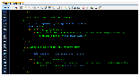
// GATTC_EVT_DISC_PRIM_SERV_RESP event uint8_t i = 0; for(i=0; i<no_of_links;i++) if(conn_hdl[i] == p_event->eventField.onDiscPrimServResp.connHandle) conn_hdl_role[i] = BLE_ROLE_CLIENT; // GATTC_EVT_DISC_PRIM_SERV_BY_UUID_RESP event uint8_t i = 0; for(i=0; i<no_of_links;i++) if(conn_hdl[i] == p_event->eventField.onDiscPrimServByUuidResp.connHandle) conn_hdl_role[i] = BLE_ROLE_CLIENT;
- The initiated scan operation will
provide scan timeout event in
app_ble_handler.c, we can start the advertisement to connect with another central device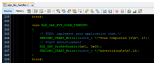
-
Add “
APP_MSG_UART_CB” to the generatedAPP_MsgId_Tinapp.h.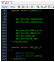
BLE_TRSPC_SendData(conn_hdl[i], 1, &uart_data); is the API to be used for sending data towards the Client device-
BLE_TRSPS_SendData(conn_hdl[i], 1, &uart_data); is the API to be used for sending data towards the Server deviceNote: * The precompiled application example uses a UART callback to initiate the data transmission upon receiving a character on UART.Example Implementation for Transmitting the received data over UART using theBLE_TRSPC_SendDataand theBLE_TRSPS_SendDataAPI inapp.c.#define BLE_ROLE_CLIENT 1 #define BLE_ROLE_SERVER 2 uint16_t conn_hdl[3];// connection handle info captured @BLE_GAP_EVT_CONNECTED event uint8_t uart_data; uint8_t no_of_links;// No of connected peripheral devices uint8_t i = 0;// link index extern uint16_t conn_hdl_role[3]; void uart_cb(SERCOM_USART_EVENT event, uintptr_t context) { APP_Msg_T appMsg; // If RX data from UART reached threshold (previously set to 1) if( event == SERCOM_USART_EVENT_READ_THRESHOLD_REACHED ) { // Read 1 byte data from UART SERCOM0_USART_Read(&uart_data, 1); appMsg.msgId = APP_MSG_UART_CB; OSAL_QUEUE_Send(&appData.appQueue, &appMsg, 0); } } void APP_UartCBHandler() { uint8_t index = 0; for(index = 0; index < no_of_links; index++) { if(conn_hdl_role[index] != BLE_ROLE_CLIENT) BLE_TRSPS_SendData(conn_hdl[index], 1, &uart_data); else { if(index == i) BLE_TRSPC_SendData(conn_hdl[index], 1, &uart_data); } } i++; if(i==no_of_links) i = 0; //reset link index } /////////////////////////////////////////////////////////////// // Enable UART Read SERCOM0_USART_ReadNotificationEnable(true, true); // Set UART RX notification threshold to be 1 SERCOM0_USART_ReadThresholdSet(1); // Register the UART RX callback function SERCOM0_USART_ReadCallbackRegister(uart_cb, (uintptr_t)NULL); ///////////////////////////////////////////////////////////// if(p_appMsg->msgId==APP_MSG_BLE_STACK_EVT) { // Pass BLE Stack Event Message to User Application for handling APP_BleStackEvtHandler((STACK_Event_T *)p_appMsg->msgData); } else if(p_appMsg->msgId==APP_MSG_UART_CB) { // Transparent UART Client Data transfer Event APP_UartCBHandler(); }
BLE_TRSPC_EVT_RECEIVE_DATAis the event generated when data is sent from peripheral device inapp_trspc_handler.cUsers need to use the
BLE_TRSPC_GetDataLength(&data_len)&BLE_TRSPS_GetDataLength(&data_len)API to extract the length of application data received-
BLE_TRSPC_GetData(&conn_hdl, data); &BLE_TRSPS_GetData(&conn_hdl, data); API is used to retrieve the data,conn_hdlis the value obtained from Connection Handler sectionNote:BLE_TRSPC_Event_T p_eventstructure stores the information about BLE transparent UART callback functionsBLE_TRSPS_Event_T p_eventstructure stores the information about BLE transparent UART callback functions
Example Implementation for printing the received data from peripheral device over UART/* TODO: implement your application code.*/ uint16_t data_len; uint8_t *data; // Retrieve received data length BLE_TRSPC_GetDataLength(p_event->eventField.onReceiveData.connHandle, &data_len); // Allocate memory according to data length data = OSAL_Malloc(data_len); if(data == NULL) break; // Retrieve received data BLE_TRSPC_GetData(p_event->eventField.onReceiveData.connHandle, data); // Output received data to UART SERCOM0_USART_Write((uint8_t *)"\r\nClient Data :", 15); SERCOM0_USART_Write(data, data_len); // Free memory OSAL_Free(data);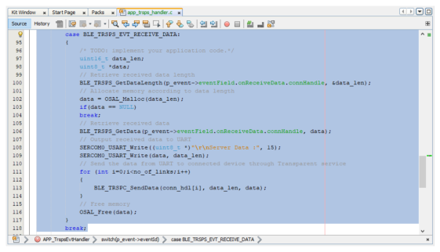